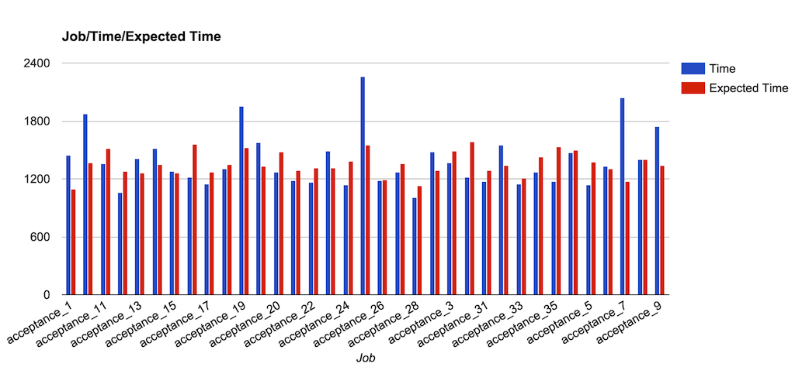
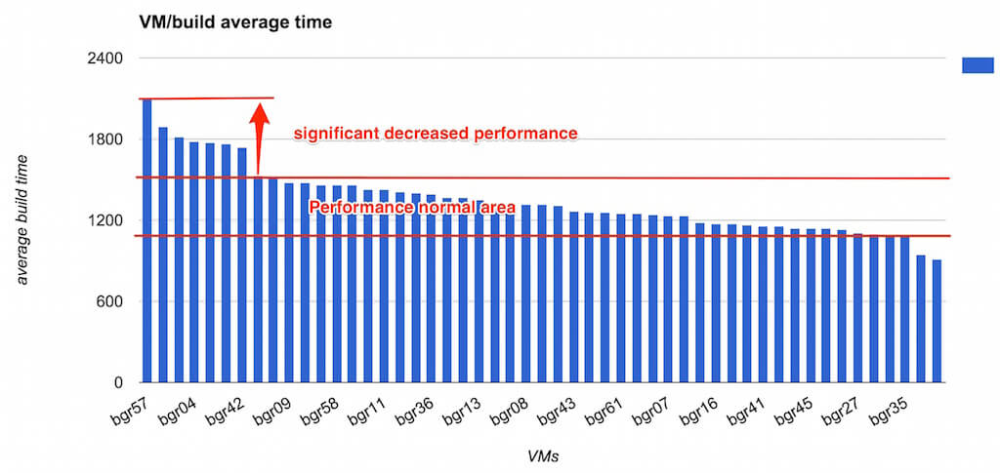

Visibility can be hard, but it's worth it.
Mingle is a 9 years JRuby Rails project. We do test-driven development and continous integration. We write selenium tests to test everything since Oct 2006.
For a long time, our build time was 1 to 2 hours. We thought it was a good balance of build time and resources needed.
2014, we had about 12+K tests, including units, functionals and selenium tests. The best build time was 1 hour ran in parallel on 46 VMs.
We ran test in parallel by Go CD jobs and TLB. There were 46 test jobs in one Go CD stage. Units, functionals and selenium tests were different. So We created 3 TLB tasks to distribute them separately. We configured TLB to distribute tests by test runtime for having similar build time.
When I looked for ideas to improve build performance, I had the following questions:
- Where was time spending when test was running?
- Were there bottlenecks in test code?
Profiling was an obvious option, but it was challenge to profile build. Because:
- Profiling one test won't help. To figure out what's bottleneck for entire build, we need profile all tests running.
- Profiling generates lots of data. 1 hour build on 46 VMs will generate tons of data.
- We need merge/aggregate data collected from build VMs for analysis.
It turns out, sampling profiler can be a good tool for this job. But Mingle is on Ruby 1.8. There wasn't sampling profiler support it. So I wrote Sampling Profiler and a data analysis web application to do the job:
- First I ran Sampling Profiler with test on build.
- Then sent all profiling call-graph data to the data analysis web application.
- Data analysis web application merges same build profiling result.
- Last, I built UI to navigate through profiling result.
After I did it, test code performance improvement became straightforward. The biggest surprise I found was test slept 1 hour on build in total. The following code was one example:
{% highlight ruby %} Timeout::timeout(time / 1000.0) do # wait until given JavaScript condition is true while get_eval(condition).downcase == "false" sleep 1 end end {% endhighlight %}
The sleep 1 code above caused build slept about 40+ minutes in total.
Changing sleep 1 to sleep 0.1 fixed problem.
Although there was no big bottleneck found, I was able to list and fix a handful small bottlenecks. Our build time reduced to 45 minutes, and became more stable.
You're on the right track when you're improving visibility of the problem detials. It can be hard. But hard work pays off.
Detail can lead you to the truth.
Recently, our build became unstable (more random failures) and longer (1 hour) again. I got time to look into build performance again. My teammate Jeff Norris noticed it was too slow when running selenium test on build VM. I realized we had not paid attention to our VM performance. Our VMs ran with 1 vertual CPU and 3.5 GB memory. To run a selenium test, we need launch 3 processes:
- Mingle application server for testing
- Selenium proxy server
- Selenium test.
It is possible that 1 vertual CPU is not enough. So we increased build VMs to 2 vCPU. Build time decreased to 50 minutes. The result was not as good as we thought. So I compared all jobs runtime. It turned out some selenium test jobs ran twice faster than other selenium test jobs.
As TLB balanced our selenium tests by time, we expect job runtime similar. My first hypothesis was TLB may not work as expected. Because tests didn't seem to be distributed well by runtime. To verify my hypothesis, I checked out TLB source code. It was more complex than I thought. And there is also no way to output more logs to verify it's correctness. But Go CD has good support for APIs, so I wrote Ruby script to verify my hypothesis.
The following chart shows how the test runtime looks like on build. X-axis is job names; y-axis is job runtime.

Blue bars are test runtime on job. Red bars are "expected time", because TLB distributed tests by previous build test runtime. Red bars are test runtime calculated by previous build test runtime:
Job expected runtime = sum of each test runtime in previous build
From this result, we can see the balance is not perfect, but OK. Because red bars are similar high across all acceptance (selenium test) jobs.
Blue bars matched what I observed on build time. Then I ran same script on more builds. The outputs were similar, just different jobs got longer time to run.
As Go CD random picked up build VMs to run any job, it gave me a clue that maybe its build VM performance issue. So I wrote another script to build the following chart:

It's clear there are some VMs are consistent slower than others. Then Barrow Kwan found out 2 of our VMs hosts were overloaded when we increased vCPUs on our VMs. We have set the host NOT to overload the CPU core but there was a typo in configuration. After sorted out VM host CPU overload issue, our build time reduced to 30 minutes.
So, don't just assume, prove it with detailed data. Make details visible. It leads you to the truth.
You don't know what you don't know.
Go CD introduced "timestamps in console logs" in release 15.1. It made build task runtime visible. I was not pay attention to the timestamps in the console logs until recently. The following screenshot shows an example:

It turns out, tlb.rb client we used has the following code:
{% highlight ruby %} def self.get path sleep 2 Net::HTTP.get_response(host, path, port).body end {% endhighlight %}
It only sleeps 2 seconds for one call, but it is called lots of times at the end of tests ran.
After removed code sleep 2, there is almost no time spent at the end of test anymore.
Without "timestamps in console logs", it is something like following:

No one will notice it ever.
The benefit of fixing this problem is outstanding for our pre-commit build. Pre-commit build is a build running a test suite before developer pushes changes to trunk repository. Our pre-commit build runs all unit and functional tests. The build time reduced from 18 minutes to 10 minutes with 20 processes on 3 machines.
So, use/build tools that keep information visible, you may be surprised what you can get from it.
Conclusion
Each time we improved our CI build performance, we thought that's the best we could do. But it was not true overtime.
We found something, but missed other parts. So when you look into a problem, don't assume how it works. Working for better understanding instead. There are various ways to gain more understanding of the problem:
- Start from scratch.
- Look from different point of view.
- Make hypothesis and verify it.
- Find out more details of the problem.
- Learn from resolving similar problems.
- …
Visibility of the problem detail supports you hunting helpful data. Thus it gives you more opportunities to understand and solve problem.